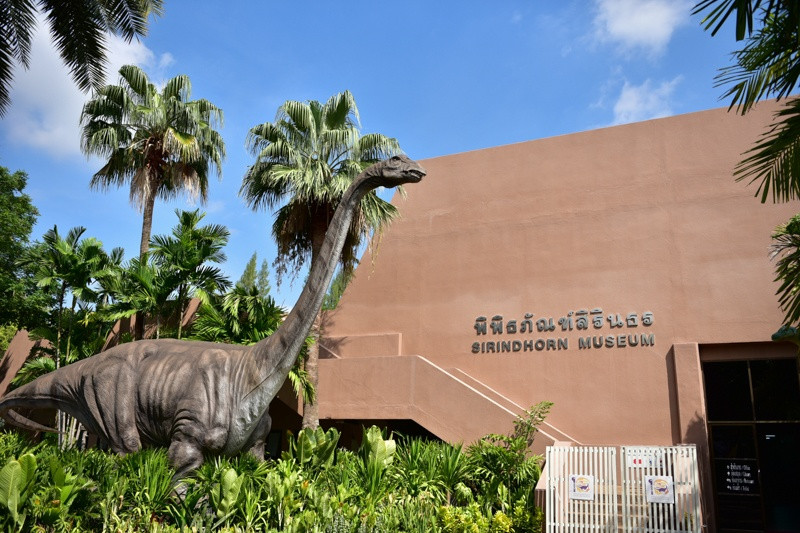
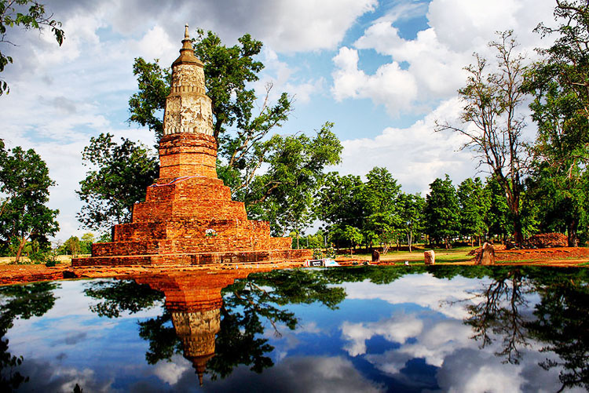
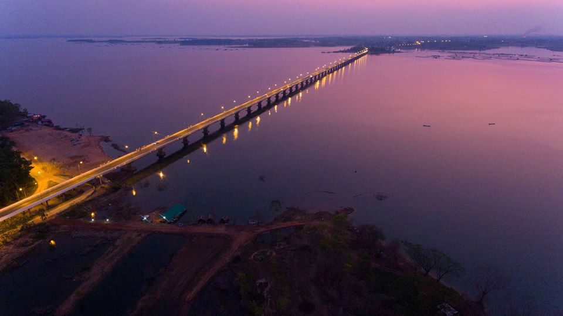

ที่ท่องเที่ยวทั้งหมดในกาฬสินธุ์

พิพิธภัณฑ์สิรินธร (ภูกุ้มข้าว)
4.8(1,258 รีวิว)
ศูนย์วิจัยไดโนเสาร์และพิพิธภัณฑ์ธรณีวิทยาที่สมบูรณ์ที่สุดในอาเซียน

พระธาตุยาคู (เมืองฟ้าแดดสงยาง)
4.7(890 รีวิว)
เจดีย์สมัยทวารวดีที่ใหญ่ที่สุดในประเทศไทย โบราณสถานที่สำคัญของจังหวัด

วัดวังคำ
4.6(750 รีวิว)
วัดงดงามด้วยสถาปัตยกรรมล้านนาคล้ายวัดเชียงทองในหลวงพระบาง

สะพานเทพสุดา (เขื่อนลำปาว)
4.9(2,134 รีวิว)
สะพานข้ามน้ำจืดที่ยาวที่สุดในประเทศ ชมวิวทิวทัศน์สวยงามของเขื่อนลำปาว

อุทยานไดโนเสาร์ภูโป
4.3(420 รีวิว)
แหล่งค้นพบรอยตีนไดโนเสาร์ที่ชัดเจนที่สุดแห่งหนึ่งของไทย

หมู่บ้านทอผ้าไหมแพรวา
4.6(515 รีวิว)
แหล่งกำเนิดของ "แพรวา ราชินีแห่งไหม" ผ้าไหมทอมือลายโบราณ

หาดดอกเกด (เขื่อนลำปาว)
4.4(1,580 รีวิว)
"ทะเลอีสาน" ที่ชาวกาฬสินธุ์นิยมมาพักผ่อน มีกิจกรรมทางน้ำมากมาย
ผาเสวย
4.2(350 รีวิว)
จุดชมวิวบนเทือกเขาภูพาน รอยต่อระหว่างกาฬสินธุ์และสกลนคร

วัดพุทธนิมิต (ภูค่าว)
4.7(680 รีวิว)
วัดเก่าแก่ที่ประดิษฐานพระพุทธไสยาสน์แกะสลักบนแผ่นผา